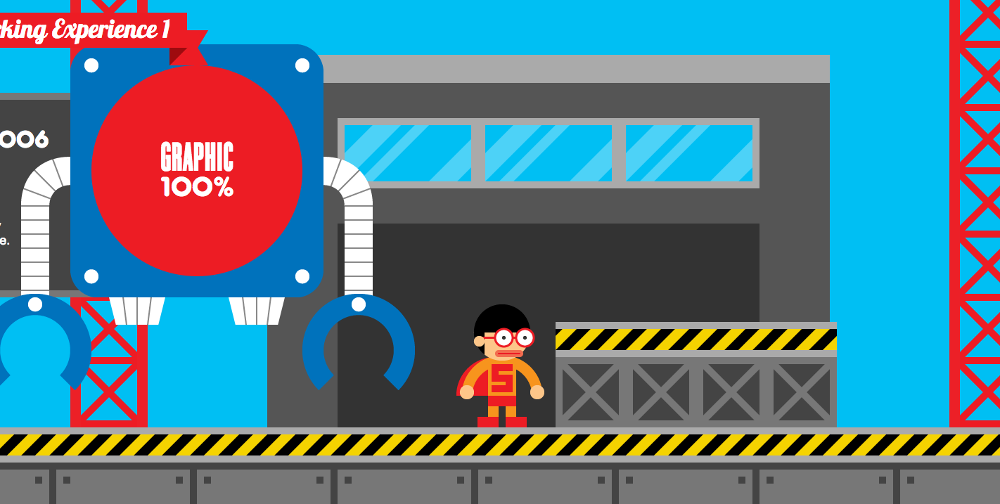
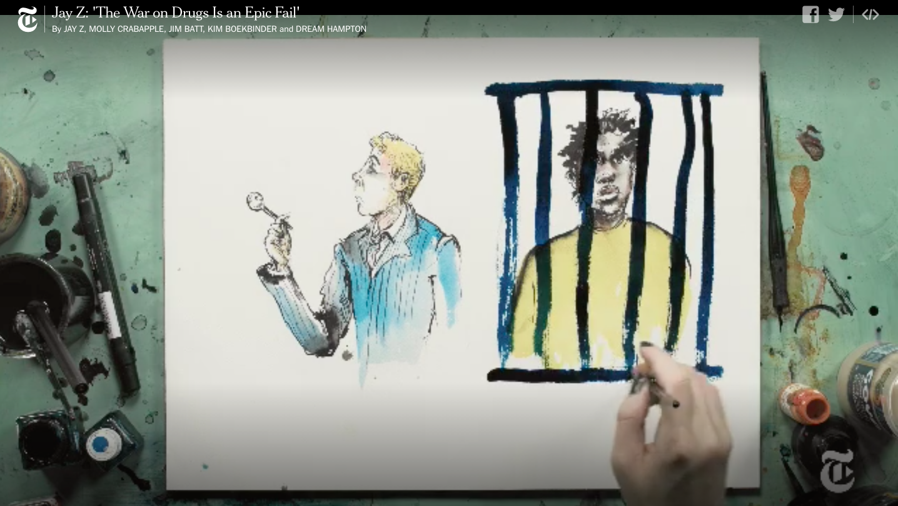

Robby Leonardi’s online portfolio has an interesting style to his webpage that I think would suit the project that I want to create. It is an interactive piece that follows his custom avatar through his achievements including skills, experience, projects, and more. As you scroll, the character moves and interacts with the background images, revealing little aspects of his portfolio as you go along. The simple interface compliments the story that Robby is telling. Each major section (i.e. About, Skills, Experience) has its own overarching page with its own unique interactions. As you move between sections, a new landscape is revealed.
The illustrations and graphic elements are friendly and engaging. The tables are well organized and the images serve their purpose as measurement. The html contains almost exclusively div tags to organize all the different sections. The rest is through javascript and jquery.
In order to make this layout suit my topic, I would have to go with a different art style since this portfolio is geared more towards a general audience and aims to display Robby’s own personality rather than express social commentary.
This video expresses the issues regarding the war on drugs and how it failed throughout the years, incarcerating many marginalized groups in the US, while leaving other communities unscathed. This video’s message mirrors what I want to portray in my project. The images are illustrated as the narration is being told, which keeps the audience’s attention. As a video, this works. However, as a web page it would fall short since it lacks many elements that would engage browsers. For example, if this video were to be translated into a web page, it would have to split each talking point into a separate section.
The webpage that this video is contained in is a drug policy site that promotes reasonable policies. It serves its purpose in that the page provides essential information regarding the race and drug wars. Because of this, the webpage lacks interactive elements save the navigation bar. The links include a drop down menu when each element is hovered on.